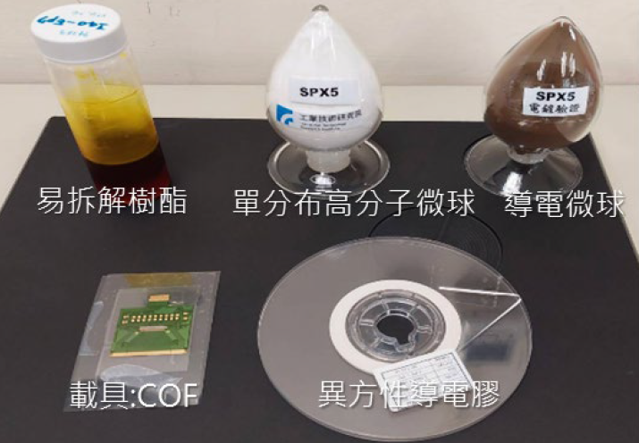

| 導電膠用易拆解樹脂材料 Degradable epoxy adhesive for anisotropic conductive film. |
| 電子構裝材料為一次性環氧樹脂材料，熱固材料滿足了電子 材料的高信賴性，然而當電子元件有回用需求時，卻面臨拆 除困難元件受損必須棄置問題;開發低溫裂解型環氧樹脂材 料，觸媒催化下膠材可低溫裂解，應用在電子構裝，元件連 結時保有環氧樹脂的高信賴性，拆解回用時再導入觸媒進行 樹脂裂解，解決元件拆解困難無法回用的問題。 Epoxy resin is usually used in Electronic packaging which shows good adhesion, corrosion resistance, chemical resistance, heat resistance, mechanical strength, dielectric properties, molding processability, low shrinkage and so on. However, when the electronic components need to be reused, it is difficult to take apart and the device is easy damaged. A low-temperature cracking epoxy resin material was developed. The thermosetting material can be cracked at low temperature by using catalyst. This new type material could be used in electronic components packaging, high reliability could be maintained. When the component need to be reworked, the catalyst is introduced for resin cracking. Low-temperature cracking epoxy resin material could track the issue of disassembly of electronic components.  |
| 技術洽詢聯絡人：林志浩 聯絡電話：03-519-2956 手機:0916702119 E-mail：howardlin@itri.org.tw |